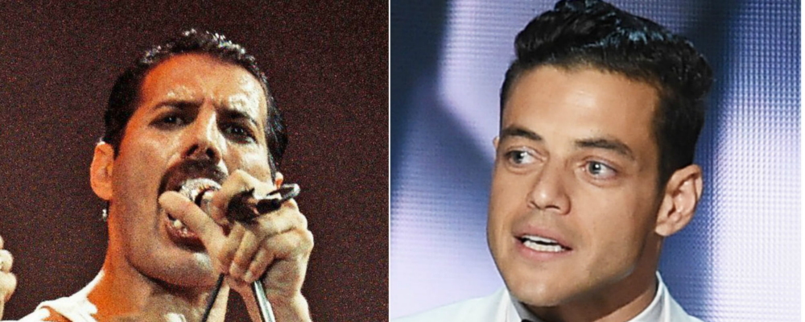

There are few people in music history as recognizable as Queen frontman Freddie Mercury — and not just his face, but his four-octave voice and flamboyant physicality. Rami Malek is well aware of that fact.
“When you’re able to open your eyes and see a different person staring back at you in the mirror,” Malek says, recalling his first time in hair and makeup, “it’s a very affirming moment.”
The Mr. Robot star is preparing to play Mercury in Bohemian Rhapsody (out Dec. 25, 2018), the Bryan Singer-directed film that chronicles Queen from 1970, when Mercury teamed with Brian May and Roger Taylor, until the band’s performance at Live Aid in 1985, six years before the singer died of complications from AIDS. Malek channels Mercury’s look from that global-concert event. Resembling the legendary musician, he says, “only adds to the level of confidence that one would need to play Freddie Mercury.”
The other part of that equation is — of course — that voice.
Parts of the movie that feature singing will utilize either Malek’s own voice or recordings of Mercury, with a sound alike filling in the gaps.“We’re going to use Freddie as much as possible and use myself as much as possible,” Malek says.“I’m in Abbey Road [Studios] right now if that should say anything to you. I’m not working on my acting.”
Singer, who last helmed 2016’s X-Men: Apocalypse, describes his approach to Bohemian Rhapsody as “not a traditional biopic” but rather a story honoring the music, an angle hinted at by the film’s limited time frame. “It won’t just be the dark Freddie story, but that being said, that also will be honored,” Singer says. “It’s about collaboration. It’s a celebration.”
See the first photo of Malek as Mercury — released Tuesday, on what would have been the singer’s 71st birthday — above.